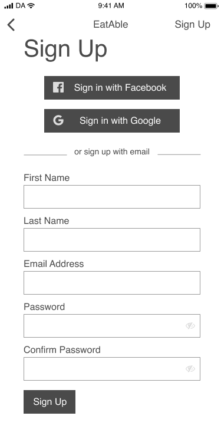
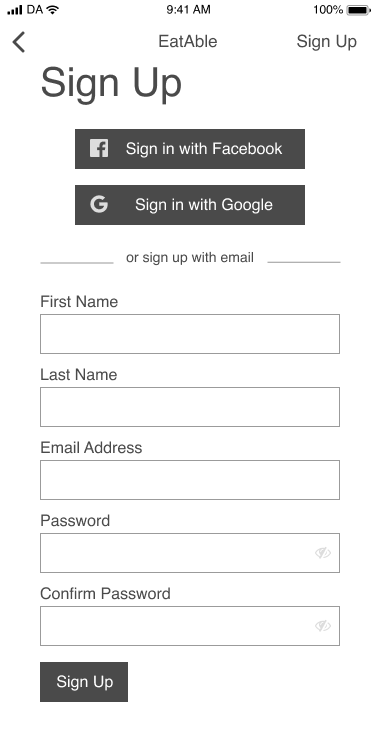

EatAble is an app to help people with allergies or preferences find dishes they can eat at nearby restaurants.
UX/UI Designer
Researcher/Analyst
Logo
Style Guide
Clickable Prototype
High Fidelity Mockups
Assets for Developer Handoff
Figma
Sketch
Whimsical
Google Forms
People with allergies or preferences have trouble finding places to eat near them. Once they find a place to eat, it is hard to determine what they can eat off the menu. People are usually guessing off the menu without real information. Unfortunately, at most places, the staff is only somewhat knowledgeable about dishes. Overall, eating out is a struggle for anyone with allergies.
EatAble solves this issue as an app that displays restaurants nearby that work with EatAble. The restaurants input their allergen and preferences information so users are able to see what they can eat off the menu before even arriving. This means users can find a dish they are actually excited about and have confidence they can eat it.
This showed me that users need an app that helps them find a restaurant and shows them what they can eat once they are there. There needs to be features for both because a restaurant can be allergy friendly but not accommodate well enough for your specific allergy.
With the research and data collected, I began building user personas. These personas would be identified as potential users.

Amy is motivated by keeping her daughters happy and healthy. She has to manage her time between work and family. That makes it hard to manage her daughters allergies since it is so hard to order out food. She doesn’t want her daughter to be held back by allergies.
Amy is frustrated when she goes to restaurants and the staff doesn't know about allergies. It is scary to feed things to your daughter when you are not confident. It is hard for her to find places to take her daughter where she knows she can find something that she will enjoy eating. She is sick of choosing a restaurant and then her daughter only being able to eat fruit there.

Jenny is motivated by making friends and participating in social events. She wants to be able to eat out with friends. She is in college and doesn’t want to have to cook every night. She is very shy and would rather not have to talk to staff about her allergies, she finds it embarrassing.
She is frustrated because she feels like the staff doesn’t know about allergies as much as they should. She often gets sick after she eats out and she spends the whole meal feeling stressed that it is going to happen again. She gets embarrassed when friends ask her where to eat and she has no idea what restaurants will be allergy friendly or when she has to order a very basic salad.
My analysis of Find Me Gluten Free, Allergy Eats and Allergy Menu showed me there is a gap in the market for an app that shows what food someone with allergies can specifically eat. Find Me Gluten Free and Allergy Eats are user feedback based so you can learn that someone had a good experience there but still don't know what you will be able to eat. Allergy Menu is only available in the UK.
I created detailed paths for finding a restaurant, saving your allergies or preferences, on-boarding and signing in for new and returning users, This detailed information architecture served as a template for the creation of the site.
See all User StoriesUsing my user flows, I started sketching out how the screens would look. Next, I used Figma to turn these sketches into digital wireframes.
 

The next step before creating the layout of EatAble was establishing the look and feel of the brand. This included choosing a red, yellow and orange color scheme. Red and yellow evoke feelings of hunger which relates well to a restaurant app. However, they have been used by a lot of brands, specifically fast food. To distinguish EatAble better, I included orange. This made the color scheme bright, fun and still hunger evoking.
The EatAble logo began as a sketch, then underwent many iterations before the final logo was chosen. It was chosen because it represented the brand well. The idea of an allergy app is to make users feel confident in the information. To display confidence a checkmark was included in the logo.


Based on the wireframes, user testing and branding, I then completed high fidelity mockups. They comply with IOS standards. They convey the simplicity of the app making users feel like finding something to eat is a simple process with EatAble.

 High Fidelity Mockups
High Fidelity Mockups
With the high fidelity prototype, I had three in-person or remote usability tests. Each user had six tasks that they needed to complete.
Task 1: Find a restaurant you want to eat at
Task 2: Tell the app you are vegan
Task 3: Share the restaurant
Task 4: Create an account
Task 5: Save a restaurant
Task 6: Search for a restaurant
The participants were able to complete each of the steps. Two users said they were not completely sure if the symbols for share and save meant to share and save. Based on that feedback I added subtitles to the icons to make it clear for users. The users also said they would like to see a location on the screen so they were sure they were looking in their area. This was valuable feedback, so on screens where you are browsing restaurants I added your location to the title bar.
Overall, I think the project was a success. As someone with allergies I would find this app very valuable in finding a place to eat. I worked with users to see that they are having the same issues as me when it comes to having allergies and eating out.
One thing that did not go well was building my logo. I really wasn’t sure how to best make the checkmark stand out without making the E look like an F. I worked with potential users to test different iterations and see which one made them think of a check mark. The right solution ended up extending the top of the mark above the A to show it was a different element.
Going into the project, I worried that users would not have the same issues as me. I got the idea from my own daily life but it needs to be user based to be successful. I was able to determine that people with allergies are having the same issues as me.
I learned how important user testing is through this project. I got some important ideas through user testing like including the location. The user testing really refined the project and brought it to the next level.
If I had more time I would like to add a delivery feature to the project. User’s with allergies also have trouble ordering food they can eat from delivery. By making the app compatible with delivery, restaurants can see exactly what allergies they are dealing with and users can know what to order without calling.